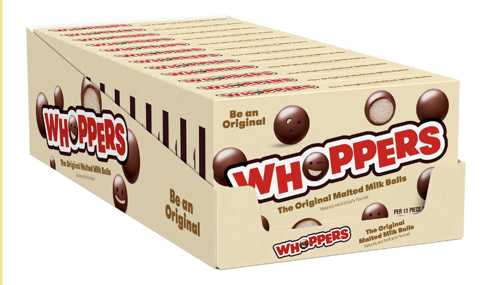
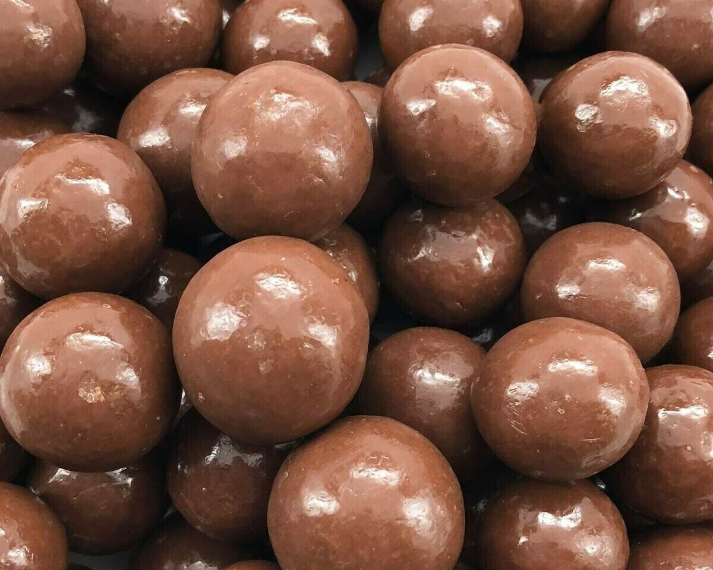

About Whoppers Malted Balls
Whoppers are malted milk balls with an artificial flavored "chocolatey coating" produced by The Hershey Company. The candy is a small, round ball about 3⁄4 inch (20 mm) in diameter. They are typically sold in various packaging options: either in a small cardboard candy box, in a larger box that resembles a cardboard milk carton, as the 'Fun Size' variety which is a tube-shaped plastic package sealed at the sides and contains twelve Whoppers weighing 21 grams (0.74 ounces), or as an even smaller variety in a tube containing three Whoppers weighing 6.8 grams (0.24 ounces).
History
In 1939, the Overland Candy Company introduced the predecessor to Whoppers, a malted milk candy called "Giants". In 1947, Overland merged with Chicago Biscuit Company, Leaf Gum, and Laf Machinery. Two years later, Leaf Brands reintroduced malted milk balls under the name of "Whoppers". All products manufactured by Leaf Brands were purchased by W. R. Grace in the 1960s; however, they were repurchased by Leaf in 1976. Finally, Hershey Foods Corporation acquired the Leaf North America confectionery operations from Huhtamäki Oyj of Espoo, Finland, in 1996. The company has been producing the Whoppers candy to this day.
